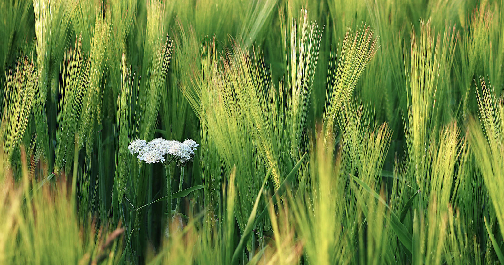

Warkworth Green Matters informs, influences and facilitates greener ways of living in and around Warkworth. It develops and supports practical projects that protect nature, conserve wildlife and increase climate mitigation, adaptation and resilience in the local community. See Constitution (PDF)
Membership is open to anyone interested in helping the group achieve its aims. For further information or to volunteer your support contact warkworthgreenmatters@gmail.com .
